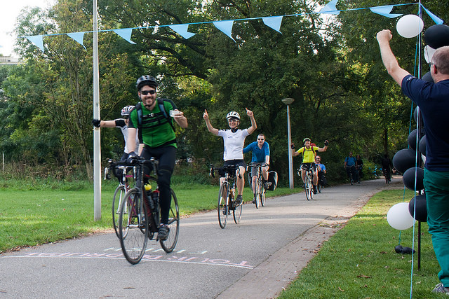

Planning and executing a focused Sprint that actually addresses
a blocking area and helps move an Open Source Project
forward
Core Conversations
YesCT
Cathy Theys
@YesCT
drupal.org/u/yesct
BlackMesh
pwolanin
Peter Wolanin
drupal.org/u/pwolanin
Acquia
Planning and executing a focused Sprint that actually addresses
a blocking area and helps move an Open Source Project
forward
Moving an open source project forward
Sprint

photo by crizzirc https://www.flickr.com/photos/29363647@N04/15445783612/ https://creativecommons.org/licenses/by/2.0/
DrupalCon
- @todo picture : https://www.flickr.com/photos/20441752@N02/14208872239/ https://www.flickr.com/photos/peterlozano/8807306901/ https://www.flickr.com/photos/peterlozano/8817881658/
https://www.flickr.com/photos/mohamedn/2821674448/in/set-72157607074336475
Focused sprint
@todo picture from new jersey?
Background: Drupal 8 release plans
@todo picture, maybe of the timeline/years
Purpose
Things we can agree on
dedicated space
@todo picture
https://www.flickr.com/photos/davidmolliere/4381511059/
https://www.flickr.com/photos/phase2technology/9300553561/
https://www.flickr.com/photos/didiermisson/5416800031/
electricity
@todo picture
https://www.flickr.com/photos/mccun934/6860828410/
https://www.flickr.com/photos/kev_walsh/2204661729/
https://www.flickr.com/photos/kalleboo/4624237772/
tables
@todo picture
https://www.flickr.com/photos/didiermisson/5417359520/
https://www.flickr.com/photos/20441752@N02/15722782760/
https://www.flickr.com/photos/20441752@N02/15909344732/
https://www.flickr.com/photos/29978062@N04/13423656983/
drinks
@todo picture
https://www.flickr.com/photos/scatteredsunshine/7001283857/
https://www.flickr.com/photos/danquah/5513645701/
https://www.flickr.com/photos/marcusx/7834773028/
https://www.flickr.com/photos/phase2technology/6928690462/
https://www.flickr.com/photos/jllanosfoto/10543139056/
natural light
@todo picture
https://www.flickr.com/photos/krimsonbelgium/3566792496/
https://www.flickr.com/photos/127544210@N06/15222140608/
https://www.flickr.com/photos/phase2technology/15697887914/
https://www.flickr.com/photos/jockew/4931301395/
https://www.flickr.com/photos/29978062@N04/13423901154/
writing boards
@todo picture
https://www.flickr.com/photos/drumm/28799551/
https://www.flickr.com/photos/dekstop/8598067193/
https://www.flickr.com/photos/jasonchinn/1868647409/
climate
@todo picture
https://www.flickr.com/photos/fgmarand/4140630256/
parking
@todo picture
https://www.flickr.com/photos/positionmktg/6959765893/
https://www.flickr.com/photos/dno1967b/6438867933/
Internet
https://www.flickr.com/photos/futureshape/504581634/
https://www.flickr.com/photos/tsakshaug/4332544104/
https://www.flickr.com/photos/jerryjohn/63351338/
Food
https://www.flickr.com/photos/marcusx/7834803670/
https://www.flickr.com/photos/danquah/10006685124/
https://www.flickr.com/photos/peterlozano/7378600808/
https://www.flickr.com/photos/nd1mbee/5649161937/
Convenience and quality matters
Community building
https://www.flickr.com/photos/ezrabg/6416131521/
https://www.flickr.com/photos/ezrabg/6251590776/
https://www.flickr.com/photos/20441752@N02/15724078639/in/set-72157649116193989
https://www.flickr.com/photos/cleverclevergirl/1358471267/
looking back
@todo picture - mantage of lots of event logos
Things you might not know
Triggers
- person + burning interest
- maintainer aware of gaps
- funding
topic identifying goals
triaging issues ahead of time
Example
Have a committer
track key issues
make sure updates get posted on the issue
check-ins during the day
daily update
communicating what happened
check on issues that got close but not committed
D8 accelerate
Controversial things
Conversation
Sprints
@todo get sprint slide based on template
Feedback
@todo get feedback slide based on template